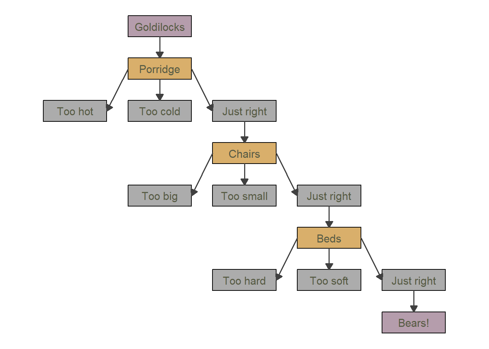
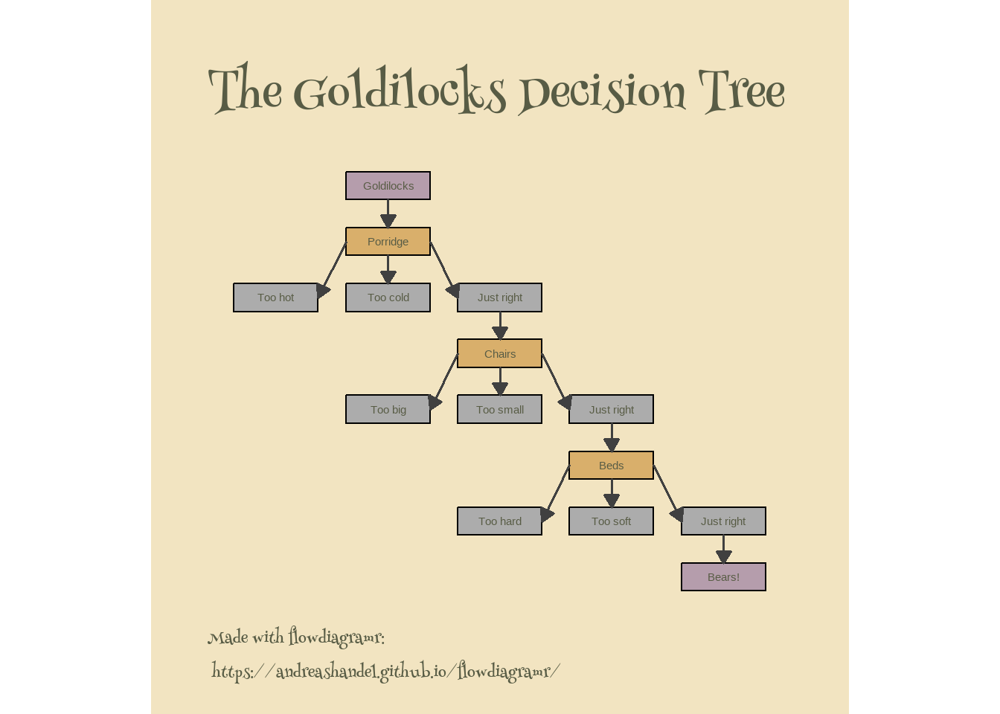
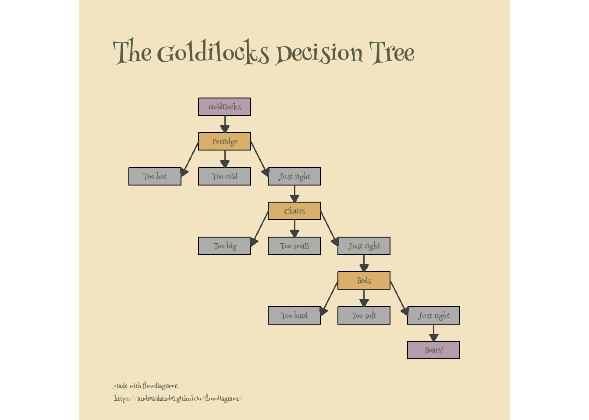
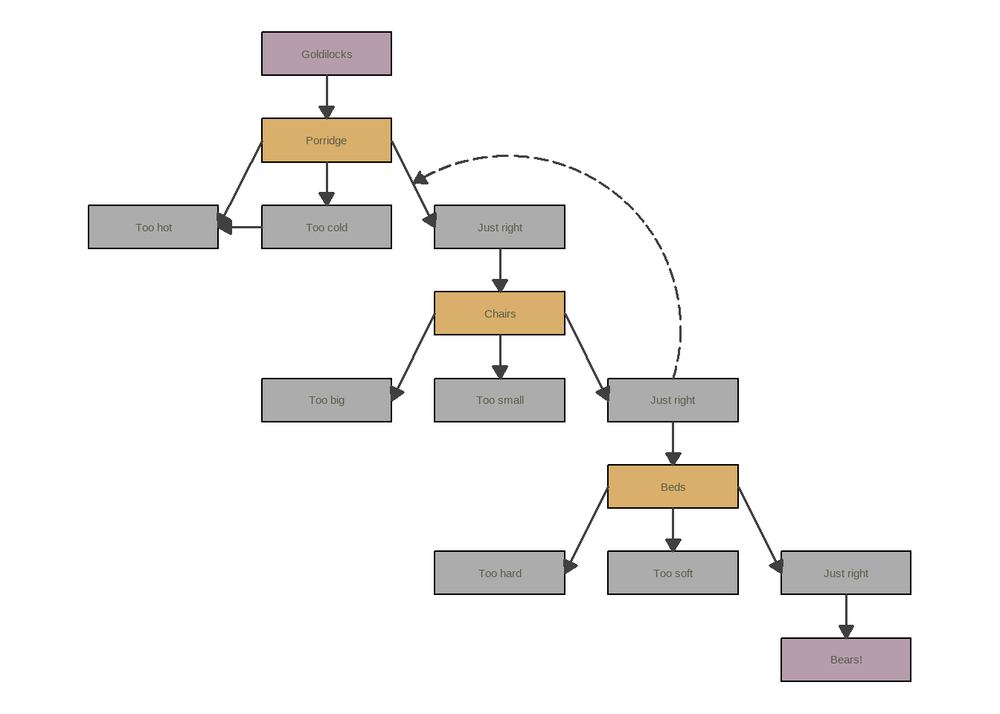

library('ggplot2')
library('flowdiagramr')
library('sysfonts') #for extra fonts
library('showtext') #for extra fontsExploring the flowdiagramr R package
R Package
Visualization
A brief post showing how to use the
flowdiagramr R package to make flowcharts.
Motivation
For a while now, we’ve been working on an R package called flowdiagramr which lets you create flow diagrams in R. The main reason we wrote this package is because while there are other R packages that can generate diagrams, I couldn’t find one that allowed me to create flow diagrams for the kind of compartmental simulation models that I often use in research and teaching. For instance right now, all model diagrams in my population-level and within-host modeling packages DSAIDE and DSAIRM are drawn by hand.
While the main focus of flowdiagramr is to produce diagrams for those kind of dynamical process models with feedback loops, it can also be used to create other flow diagrams.
As of this writing, we are preparing for an initial CRAN submission. I’ve been updating the package vignettes with hopefully useful examples. By chance, I recently came across a tweet by Nicola Rennie pointing to this blog post she wrote. The blog post shows how to make a nice flow diagram using ggplot2().
I figured it would be fun to try and redo this using flowdiagramr. The following post shows that attempt.
Who this is (not) for
If you are interested in making diagrams using R and are looking for an option that might do things that current packages such as diagrammR or others can’t do, you might want to follow along.
The flowdiagramr package has (in my biased opinion) fairly decent documentation and vignettes. I’m not going to repeat all that here. I basically assume that if you want to try this out, you go to the package website and skim through the first few vignettes to get an idea of how things work. Then come back here. Or first skim through this post, then if you want, go and explore the package vignettes more.
General setup
The following shows code and my comments mixed together. It’s often useful to go slow and type your own code, or copy and paste the code chunks below and execute one at a time. However, if you are in a hurry, you can find all the code shown below in this file.
First we load all needed packages.
Diagram setup
Now we specify the model. Generally, a model consists of variables/compartments/boxes and flows/arrows connecting the boxes. This code chunk defines the variables/boxes, gives them names (used later), and provides the box grid layout as a matrix.
# the unique internal labels, just abbreviations of the full names
variables = c("GL","P","PTH","PTC","PJR",
"C","CTB","CTS","CJR",
"B","BTH","BTS","BJR",
"BE")
# the eventual names for all boxes
# we'll use that later to label the boxes
varnames = c("Goldilocks",
"Porridge",
"Too hot","Too cold","Just right",
"Chairs",
"Too big", "Too small", "Just right",
"Beds",
"Too hard","Too soft","Just right",
"Bears!")
# assigning the varnames the variable labels
# needed later
names(varnames) <- variables
# a matrix specifying the locations on a matrix grid layout
# this mimics the look of the original blog post
varlocations = matrix(data = c("","GL", "", "", "",
"","P", "", "", "",
"PTH","PTC", "PJR", "", "",
"", "", "C", "", "",
"","CTB", "CTS", "CJR", "",
"", "", "", "B", "",
"", "", "BTH", "BTS", "BJR",
"", "", "", "", "BE"
), ncol = 5, byrow = TRUE)The second component of every model are the flows between compartments/variables/boxes. Since flowdiagramr has as underlying logic the idea that flows occur between compartments, one needs to set up things as processes in such a way.
# setting up the inflows and outflows (arrows) for each box
flows = list( GL_flows = c("-k1*GL"),
P_flows = c("k1*GL","-k2*P","-k3*P","-k4*P"),
PTH_flows = c("k2*P"),
PTC_flows = c("k3*P"),
PJR_flows = c("k4*P","-k5*PJR"),
C_flows = c("k5*PJR","-k6*C","-k7*C","-k8*C"),
CTB_flows = c("k6*C"),
CTS_flows = c("k7*C"),
CJR_flows = c("k8*C","-k9*CJR"),
B_flows = c("k9*CJR","-k10*B","-k11*B","-k12*B"),
BTH_flows = c("k10*B"),
BTS_flows = c("k11*B"),
BJR_flows = c("k12*B","-k13*BJR"),
BE_flows = c("k13*BJR")
)Diagram preparation
The first step for each flowdiagramr diagram is the preparation stage using the prepare_diagram() function. For that, one needs to supply the model as a list of variables and flows (boxes and arrows) and optional layout specifications.
# model object
gl_model = list(variables = variables, flows = flows)
# model layout
model_settings = list(varlocations=varlocations,
varbox_x_size = 3)
# prepare model
gl_list = flowdiagramr::prepare_diagram(gl_model, model_settings)Diagram styling
The return from prepare_diagram is a list of data frames containing information about the variables and flows needed for plotting. One could go straight to making the diagram with make_diagram. But we already know the default doesn’t look like the blog post, therefore we apply some styling, which is done with the update_diagram function.
#set colors that are similar to original blog post
varcolors = c("#b59dac", rep(c("#D9AF6B", "#ACACAC","#ACACAC","#ACACAC"),3), "#b59dac")
# make them a named vector since that's required by update_diagram
names(varcolors) = variables
# list of all style updates we want
diagram_settings = list(var_fill_color = varcolors,
var_label_text = varnames,
var_label_color = c(all = "#585c45"),
flow_show_label = c(all = FALSE),
var_label_size = c(all = 4))
# update the look
gl_list2 <- flowdiagramr::update_diagram(gl_list,diagram_settings)Diagram generation
Now we can make and plot the diagram
# create and plot diagram
gl_diag <- flowdiagramr::make_diagram(gl_list2)
plot(gl_diag)
The result looks somewhat similar to the original, but not quite yet.
More diagram styling
The above is as far as we can get with flowdiagramr. The good news is that the created object is a a regular ggplot object and thus we can modify it further using ggplot2 code. A lot of this follows the original blog post, see there for details.
# get different fonts
sysfonts::font_add_google(name = "Henny Penny", family = "henny")
showtext::showtext_auto()
# update the plot by adding ggplot2 commands
gl_diag2 <- gl_diag +
labs(title = "The Goldilocks Decision Tree",
caption = "Made with flowdiagramr:\n https://andreashandel.github.io/flowdiagramr/") +
theme_void() +
theme(plot.margin = unit(c(1, 1, 0.5, 1), "cm"),
legend.position = "none",
plot.background = element_rect(colour = "#f2e4c1", fill = "#f2e4c1"),
panel.background = element_rect(colour = "#f2e4c1", fill = "#f2e4c1"),
plot.title = element_text(family = "henny", hjust = 0, face = "bold",
size = 45, color = "#585c45",
margin = margin(t = 10, r = 0, b = 10, l = 0)),
plot.caption = element_text(family = "henny", hjust = 0,
size = 16, color = "#585c45",
margin = margin(t = 10)),
text = element_text(family = "henny")
)Now we can plot it again
plot(gl_diag2)
This plot is fairly close. I’m skipping the addition of the image since that was done manually.
One aspect that isn’t working is having the font in the boxes be the the henry style. I did try to supply it by setting text = element_text(family = "henny"), but it seems that doesn’t work after one has already written the text. I’m not aware of a way to update text in an ggplot once it’s already placed (I wouldn’t be surprised if that’s possible, I just don’t know how.) Fortunately, we can fix that in a different way.
Even more diagram styling
Let’s see if we can fix the font issue. While setting the font through update_diagram is on the to-do list, as of this writing, this feature does not yet exist (contributions welcome 😁).
We can however ask flowdiagramr to write all the ggplot2 code that produces the diagram into a file, then modify ourselves.
This writes the full ggplot code to an R script file:
write_diagram(gl_list2,filename = "gl_diag.R", always_overwrite = TRUE)Now we can open that file, find the part that creates the text for the boxes (that part starts with “add label text”) and simply add this part family = "henny" into the geom_text() statement. We’ll also copy the commands from above to the end of the script to update the diagram_plot object. Then we’ll save the updated file, source it, and thus have an updated diagram. Here is the updated script if it’s not clear what I’m doing.
source("gl_diag_mod.R")Warning: Using `size` aesthetic for lines was deprecated in ggplot2 3.4.0.
ℹ Please use `linewidth` instead.# plot new diagram
plot(diagram_plot)
So that worked, very close to the original!
A bit more exploration
For this specific diagram, using flowdiagramr is maybe not that much better than the original version. However, once one wants to include further features, including loops, flowdiagramr shows its strength. To illustrate this, let’s add a flows that shows that after Goldilock sits in the right chair, it induces hunger and she eats more porridge. (Yes, it’s silly, but I want to show how that can easily be implemented with flowdiagramr).
To show that, we update the flows as follows
# need to define again since the above file overwrote it
variables = c("GL","P","PTH","PTC","PJR",
"C","CTB","CTS","CJR",
"B","BTH","BTS","BJR",
"BE")
# more complex flows
flowsnew = list( GL_flows = c("-k1*GL"),
P_flows = c("k1*GL","-k2*P","-k3*P","-k4*P","-kk1*P*CJR"),
PTH_flows = c("k2*P","k3a*PTC"),
PTC_flows = c("k3*P","-k3a*PTC"),
PJR_flows = c("k4*P","-k5*PJR","kk1*P*CJR"),
C_flows = c("k5*PJR","-k6*C","-k7*C","-k8*C"),
CTB_flows = c("k6*C"),
CTS_flows = c("k7*C"),
CJR_flows = c("k8*C","-k9*CJR"),
B_flows = c("k9*CJR","-k10*B","-k11*B","-k12*B"),
BTH_flows = c("k10*B"),
BTS_flows = c("k11*B"),
BJR_flows = c("k12*B","-k13*BJR"),
BE_flows = c("k13*BJR")
)Then we do the above steps to create the diagram:
# model object
gl_model_new = list(variables = variables, flows = flowsnew)
# model layout
model_settings = list(varlocations=varlocations,
varbox_x_size = 3)
# prepare model
gl_list_new = flowdiagramr::prepare_diagram(gl_model_new, model_settings)
# update the look
gl_list_new2 <- flowdiagramr::update_diagram(gl_list_new,diagram_settings)
# create and plot diagram
gl_diag_new <- flowdiagramr::make_diagram(gl_list_new2)
plot(gl_diag_new)
ggsave('featured.png',diagram_plot)Saving 7 x 5 in imageI’m skipping the font adjustment and other parts, but of course you can apply that again. This ability to create feedback loops - which are very common in scientific process/simulation/mechanistic models - is the reason we built flowdiagramr. But as you saw, it can be used for all kinds of diagrams.
Further resources
The flowdiagramr website has a bunch of vignettes/tutorials with lots of examples and further use cases. If you are intrigued by this post, go check it out 😄.
Acknowledgments
Development of flowdiagramr is a joint effort between myself and Andrew Tredennick, who did the majority of the actual coding work.